Container
它可以包含其他 Widget，并允许你控制其布局、大小、边距、填充、装饰等属性
Container 有许多属性，主要包括：
- alignment：设置子 Widget 的对齐方式。
- width 和 height：设置容器的宽度和高度。
- padding：设置内部填充。
- margin：设置外部边距。
- color：设置背景颜色。
- decoration：用于更复杂的背景样式，可以设置边框、阴影、渐变等。
圆角
四个角一样
BorderRadius.all(Radius.circular(20))
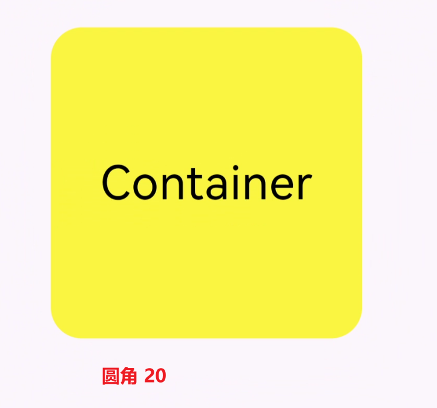
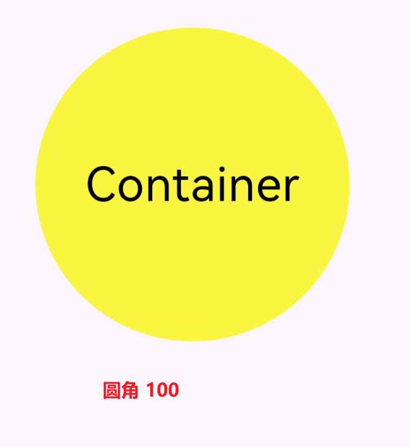
上下两边（垂直方向）的圆角度分别设置
BorderRadius.vertical(top: Radius.circular(30), bottom: Radius.circular(80))
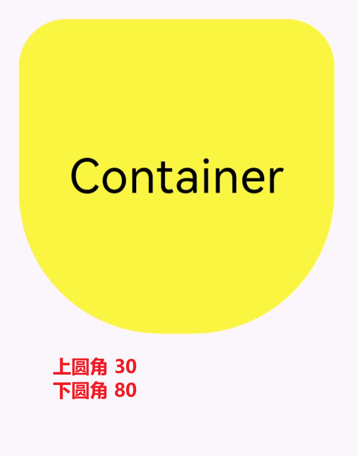
左右两边（水平方向）的圆角度分别设置
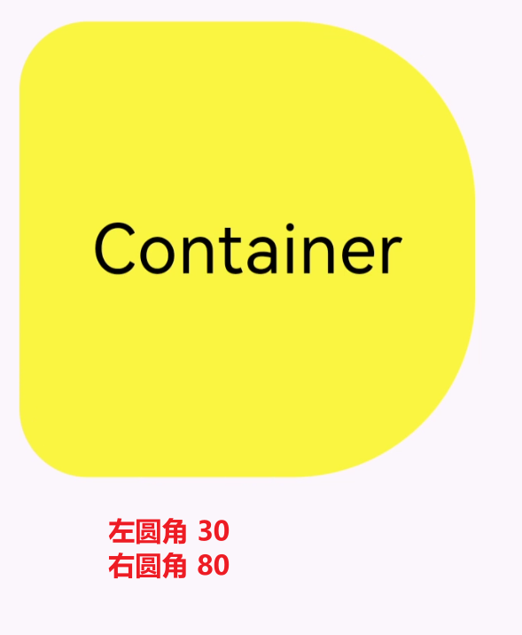
阴影
// 设置阴影
boxShadow: const [
BoxShadow(color: Colors.yellow, blurRadius: 50),
BoxShadow(color: Colors.green, blurRadius: 30),
BoxShadow(color: Colors.blue, blurRadius: 10),
],
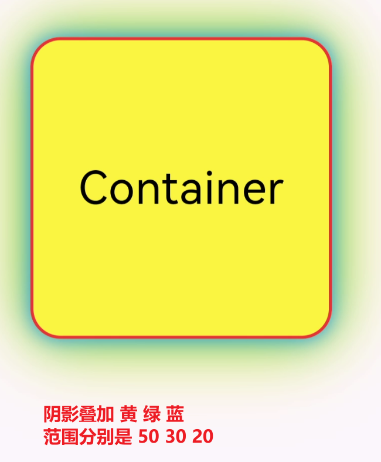
渐变
线性渐变
LinearGradient
gradient: const LinearGradient(
colors: [Colors.green, Colors.yellow, Colors.white],
begin: Alignment.topLeft,
end: Alignment.topRight)
效果:
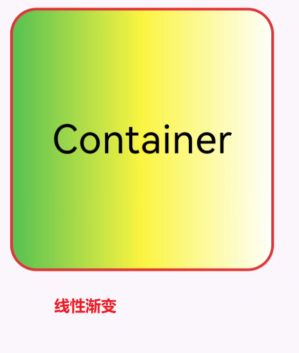
圆形渐变
gradient: const RadialGradient(colors: [Colors.green, Colors.yellow, Colors.white])
效果:
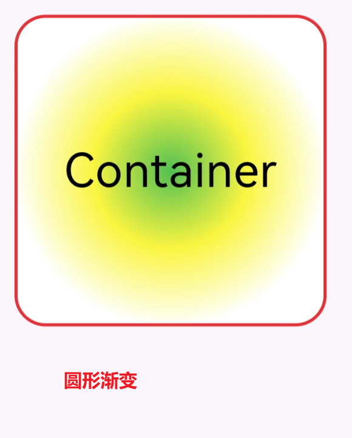
扫描渐变
gradient: const SweepGradient( colors: [Colors.green, Colors.yellow, Colors.white])),
效果:
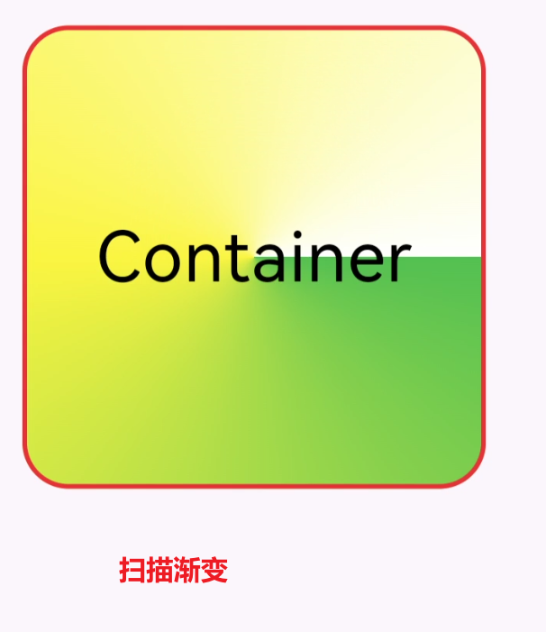
位移
水平方向或者垂直方向移动
// 向右
transform: Matrix4.translationValues(50, 0, 0),
// 向左
transform: Matrix4.translationValues(-50, 0, 0),
效果:
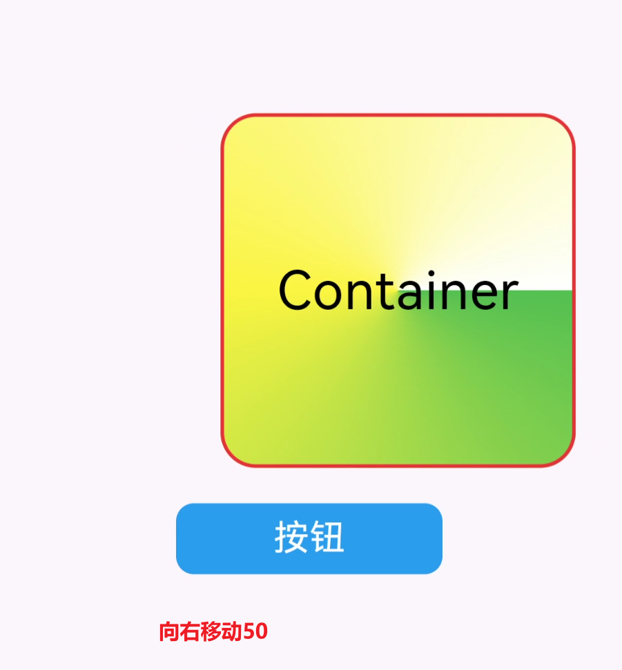
旋转
// 沿着左顶点旋转
transform: Matrix4.rotationZ(0.2),
效果:
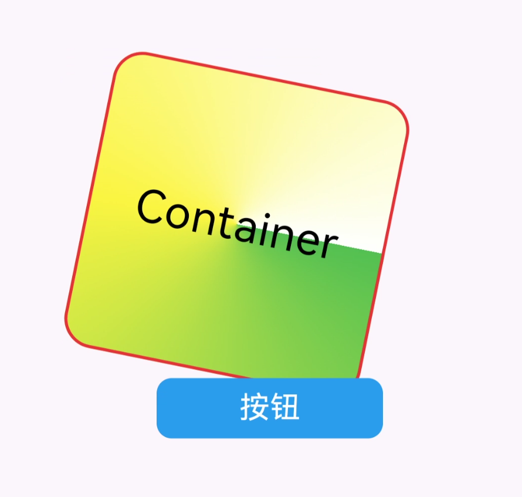
缩放
// 缩放
transform: Matrix4.skewX(0.4),
效果:
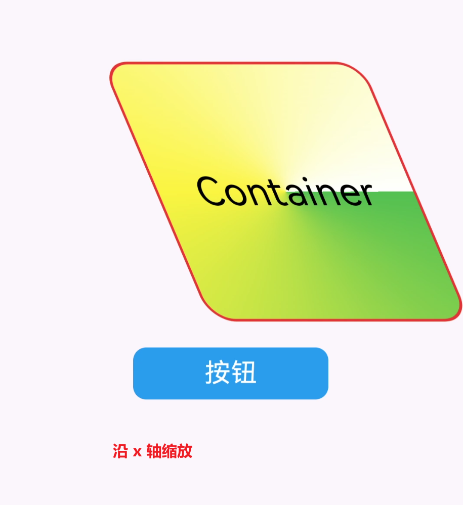
完整示例
import 'package:flutter/material.dart';
void main() {
runApp(
MaterialApp(
home: Scaffold(
appBar: AppBar(title: const Text("App Title")),
body: const MyApp(),
),
),
);
}
class MyApp extends StatelessWidget {
const MyApp({super.key});
@override
Widget build(BuildContext context) {
return Center(
child: Container(
// 设置容内部元素的对齐方式
alignment: Alignment.center,
height: 200,
width: 200,
// 修饰
decoration: BoxDecoration(
// 设置边框圆角, 四个角一样
borderRadius: const BorderRadius.all(Radius.circular(20)),
// 上下两边的圆角度分别设置
// borderRadius: const BorderRadius.vertical(top: Radius.circular(30), bottom: Radius.circular(90)),
// 左右两边的圆角度分别设置
// borderRadius: const BorderRadius.horizontal( left: Radius.circular(30), right: Radius.circular(80)),
color: Colors.yellow,
// 设置边框
border: Border.all(
color: Colors.red,
width: 2,
),
// 设置阴影
// boxShadow: const [
// BoxShadow(color: Colors.yellow, blurRadius: 50),
// BoxShadow(color: Colors.green, blurRadius: 30),
// BoxShadow(color: Colors.blue, blurRadius: 10),
// ],
// 线性渐变
// gradient: const LinearGradient(
// colors: [Colors.green, Colors.yellow, Colors.white],
// begin: Alignment.topLeft,
// end: Alignment.topRight)
// 圆形渐变
// gradient: const RadialGradient(colors: [Colors.green, Colors.yellow, Colors.white])
// 扫描渐变
gradient: const SweepGradient(
colors: [Colors.green, Colors.yellow, Colors.white])),
child: const Text(
"Container",
style: TextStyle(color: Colors.black, fontSize: 30),
),
),
);
}
}
联系方式：dccmmtop@foxmail.com